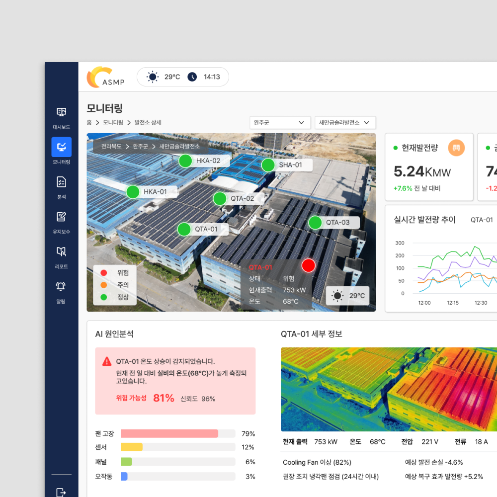
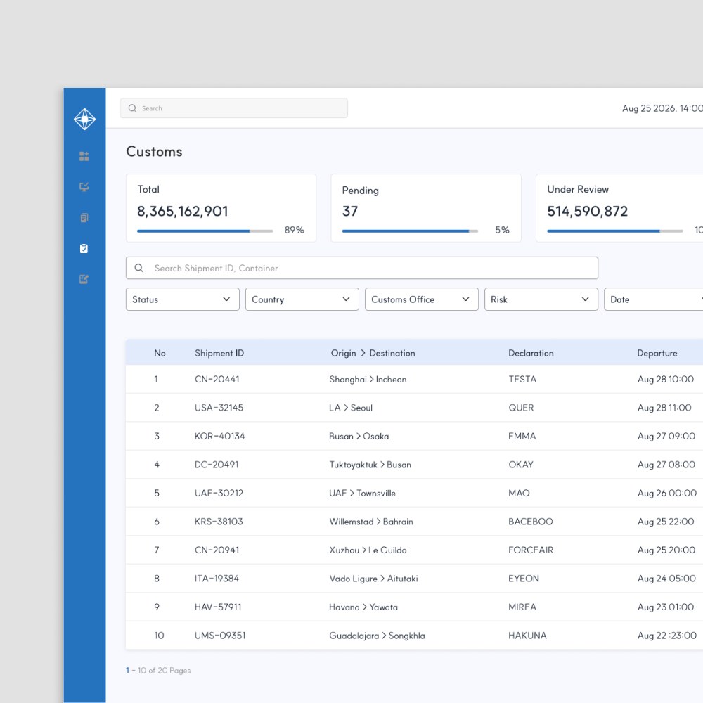
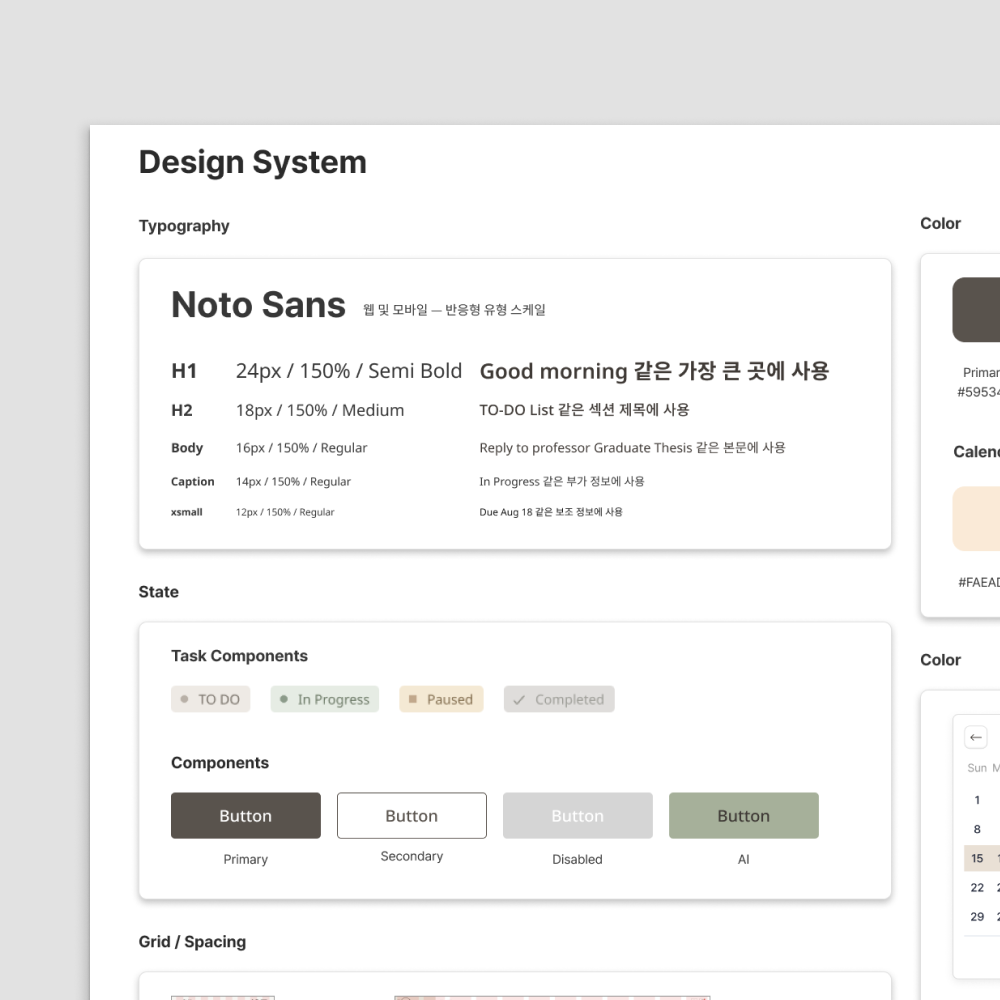

01. Dashboard & Data Visualization
복잡한 데이터와 실시간 상태 정보를 시각화하여 주요 현황과 변화를 직관적으로 파악할 수 있는 대시보드 화면을 설계

02. Admin & Workflow Design
사용자 경험과 업무의 특성을 고려하여 정보 탐색, 데이터 관리 및 작업을 효율적으로 진행할 수 있는 인터페이스 설계

03. Design System & UI Consistency
화면 공통의 UI 규칙을 세우고 재사용 가능한 컴포넌트를 통해 다양한 화면에서도 일관성있는 디자인을 고려한 UI 설계

AI 사이버보안 플랫폼
분산된 정보를 통합하여 사용자가 이해하고 판단할 수 있도록 돕고, 사건조사부터 사용자가 승인까지 연결한 AI기반 사이버보안 플랫폼

AI기반 업무 관리 엔터프라이스
프로젝트 관리를 하나로 연결하여 업무의 시작부터 끝가지 자연스럽게 연결되는 업무경험을 경험할 수 있는 AI기반 엔터프라이즈

개인 맞춤형 일정관리 플래너
AI가 사용자의 일정과 작업 패턴을 분석하여 계획을 제안하고, 웹과 모바일 어디에서나 유연하게 활용할 수 있는 일정관리 서비스

SK Broadband TAMS 홈페이지 리뉴얼
기존 화면의 무거운 인상을 가벼운 이미지로 개선하고 브랜드에 맞춘 색상과 레이아웃으로 배치하여 정돈한 홈페이지 리뉴얼 프로젝트

Kt 기업무선 관제플랫폼
실시간 데이터 수집, 분석을 통해 시설을 통합적으로 운영할 수 있는 개인 맞춤 확장형 관제 플랫폼 프로젝트

2023 IP Forum 홍보포스터
미국에 진출 준비 및 진출 중인 한국기업의 지식재산 관리 사업을 돕기 위한 홍보 포스터디자인


© 2026 Leesujin. All rights reserved.